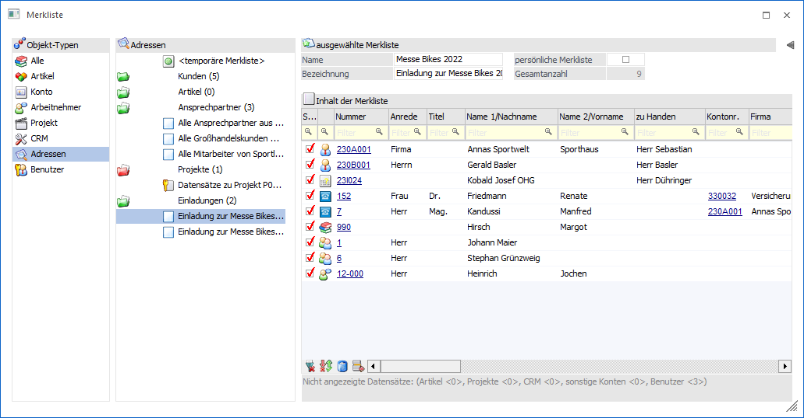
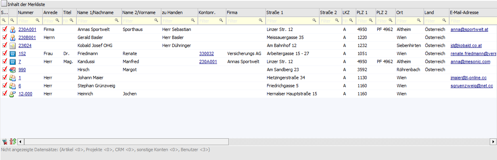
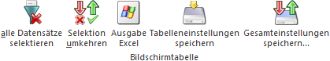

Grundsätzlich ist eine Merkliste gleich einer Kampagne zu setzen und umgekehrt. D.h. eine angelegte Merkliste kann im Programm Kampagnen aufgerufen und z.B. für ein Mailing verwendet werden.
Um das Wechseln der Programme zu vermeiden, steht der Objekt-Typ "Adressen" zur Verfügung. Innerhalb dessen werden die Merklisten im Kontext einer Kampagne dargestellt, d.h. es werden nur noch "Adressen" dargestellt und Funktionen wie Auswahl Ansprechpartner stehen zur Verfügung.

Der Aufbau des Fensters unterscheidet sich nicht von jenem, welcher im Kapitel Merkliste - Verwaltung von Merklisten erläutert wurde. Nur der Aufbau der Tabelle "Inhalt der Merkliste" ist auf die Bedürfnisse eines Kampagnen-Versands angepasst. Zusätzlich werden die folgenden Buttons freigeschaltet:
ü Aktionen
ü Meso-Connect
ü Auswahl Ansprechpartner
ü Namen suchen
Hinweis
Nähere Informationen zu den Buttons entnehmen Sie bitte dem Kapitel Merkliste.
Tabelle "Inhalt der Merkliste"

Ø Sel.
Mit der Option "Sel." wird gesteuert, welche Datensätze bei Nutzung der Buttons "Aktionen", "Meso-Connect" und "Auswahl Ansprechpartner" berücksichtigt werden sollen.
Ø Typ
Diese Spalte gibt in Form eines Icons Auskunft darüber, um was für eine Art von Adresse es sich handelt.
ü  - Personenkonten
- Personenkonten
ü  - Interessenten (Interessenten werden in
der WinLine FAKT verwaltet)
- Interessenten (Interessenten werden in
der WinLine FAKT verwaltet)
ü  - Ansprechpartner (von Personenkonten)
- Ansprechpartner (von Personenkonten)
ü  - Kontakte (Namen und Adressen ohne fixe
Zuordnung)
- Kontakte (Namen und Adressen ohne fixe
Zuordnung)
ü  - Vertreter (Vertreter werden in der
WinLine FAKT verwaltet)
- Vertreter (Vertreter werden in der
WinLine FAKT verwaltet)
ü  - Arbeitnehmer (Arbeitnehmer werden im
WinLine LOHN A bzw. WinLine SMART verwaltet)
- Arbeitnehmer (Arbeitnehmer werden im
WinLine LOHN A bzw. WinLine SMART verwaltet)
Hinweis
Mit Hilfe eines Doppelklicks auf das Icon wird in das jeweilige Stammdatenprogramm der Adresse gewechselt und der Datensatz aufgerufen.
Ø Adress-Typ (optional)
In dieser optionalen Spalte wird der Typ des Datensatzes noch differenzierter dargestellt und beinhaltet folgende Informationen.
ü 01 - Debitor
ü 02 - Kreditor
ü 03 - Interessent (Debitor)
ü 04 - Interessent (Kreditor)
ü 05 - Ansprechpartner
ü 06 - Firmen-Kontakt
ü 07 - Kontakt
ü 08 - Vertreter
ü 09 - Vertretergruppe
ü 10 - Arbeitnehmer
ü 11 - Mitarbeiter
ü 12 - Bewerber
Ø Nummer
An dieser Stelle wird die Nummer des Stammdatensatzes angezeigt.
Ø Kontonr.
Handelt es sich um einen Ansprechpartner, so wird in dieser Spalte die Nummer des zugeordneten Personenkontos oder Interessenten angezeigt.
Ø Weitere Spalten
In den weiteren Spalten werden die Stammdaten der Adresse dargestellt. Die folgenden Spalten werden hierbei ausschließlich bei Ansprechpartnern und Kontakten mit Informationen gefüllt.
ü Firma
ü Abteilung
ü Funktion
Hinweis
Die Spalten "Erl.", "Erledigt", "Wiedervorlage", "Notiz" und "Priorität" können an dieser Stelle nicht bearbeitet werden. Eine Bearbeitung ist im Fenster Kampagnen oder über die Verwaltung von Merklisten möglich.
Tabellenbuttons

Ø alle Datensätze selektieren
Beim Drücken dieses Buttons werden alle Datensätze der Tabelle selektiert. Hierbei werden ggfs. hinterlegte Spaltenfilter berücksichtigt.
Beispiel
Es sollen nur alle Datensätze aus Wien berücksichtigt werden. Zunächst werden mit Hilfe des Buttons "Selektion umkehren" alle Selektionen entfernt. Anschließend erfolgt per Filterung in der Spalte "Ort" eine Einschränkung auf alle Adressen aus "Wien". Abschließend werden alle Wien-Adressen durch Anwahl des Buttons "alle Datensätze selektieren" ausgewählt.
Ø Selektion umkehren
Durch Anklicken des Buttons "Selektion umkehren" wird die Option "Sel." bei allen Datensätzen in das Gegenteil gekehrt. Hierbei werden ggfs. hinterlegte Spaltenfilter berücksichtigt.
Ø Ausgabe Excel
Durch Anwahl des Buttons "Ausgabe Excel" wird der Inhalt der Tabelle an Microsoft Excel übergeben.
Ø Tabelleneinstellungen speichern
Die Spalten einer Tabelle können grundsätzlich an beliebige Positionen verschoben, bzw. in der Breite entsprechend angepasst werden. Durch Anwahl des Buttons "Tabelleneinstellungen speichern" werden die Einstellungen benutzerspezifisch gespeichert und bei dem nächsten Aufruf des Programmpunktes wieder vorgeschlagen.
Ø Gesamteinstellungen speichern
Im Gegensatz zu "Tabelleneinstellungen speichern" können mit "Gesamteinstellungen speichern" mehrere Tabellenaufbauten gespeichert und nach Wunsch geladen werden. Zusätzlich werden Sonderfunktionen der Tabelle (z.B. "Spalte gruppieren") ebenfalls bei der Speicherung bedacht.